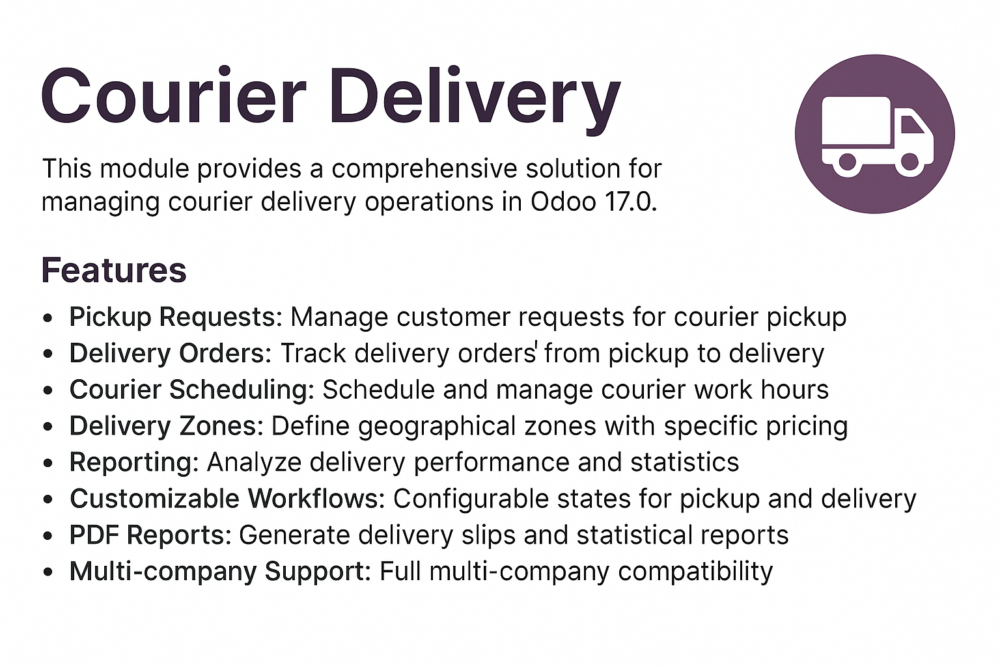

Courier Delivery Module
A comprehensive solution for managing courier delivery operations in Odoo 17.0.
This module provides a complete system for managing pickup requests, delivery orders, courier schedules, and delivery zones with comprehensive reporting and analytics.

Key Features
Pickup Request Management
Create and track customer requests for courier pickup with a complete workflow from draft to picked up.
- Automatic sequence numbering
- Status tracking
- Courier assignment
- Integration with delivery orders
- Recurring pickup scheduling
- Kanban view for visual workflow management
Delivery Order Tracking
Manage the full lifecycle of delivery orders from creation to successful delivery.
- Automatic tracking reference generation
- Delivery fee calculation based on weight, zone, and package type
- Proof of delivery with signature capture
- Delivery attempt tracking
- Barcode scanning for quick order processing
- SMS notifications for delivery status updates
Courier Scheduling
Efficiently manage courier work schedules and assignments.
- Define working hours and shifts
- Assign delivery zones to couriers
- Track deliveries and pickups per schedule
- Enhanced calendar view for easy scheduling
- Mobile-responsive interface for couriers
- Optimized workload distribution
Delivery Zones & Pricing
Define geographical delivery zones with specific pricing factors.
- Zone-based pricing
- Automatic zone assignment based on address
- ZIP code and city-based zone matching
- Courier assignment to zones
- Map view for visual zone management
- Enhanced geocoding for accurate address validation
Comprehensive Reporting
Analyze delivery performance with detailed reports and statistics.
- Success rate tracking
- Courier performance analysis
- Zone-based delivery statistics
- Revenue and delivery time reporting
- Detailed status tracking for pickups and deliveries
- New Pickup Analysis reports and views
- Optimized queries for large datasets
- Performance improvements for report generation
Ukrainian Localization
Full support for Ukrainian language and regional settings.
- Complete Ukrainian translation (uk_UA.po)
- Proper Ukrainian date formats
- Ukrainian number formatting
- Localized user interface elements
- Translated reports and documents
PDF Reports & Documentation
Generate professional delivery slips and statistical reports.
- Customizable delivery slip
- Delivery statistics reports
- Filtering by date, courier, and zone
Installation & Configuration
Installation
Install the module from the Apps menu in your Odoo instance.
The module includes demo data for testing with dates set in the future (May 15-21, 2025).
Configuration
- Create delivery zones in Courier Delivery > Configuration > Delivery Zones
- Set up couriers by enabling the "Is Courier" flag on users
- Configure user access rights through the Settings menu